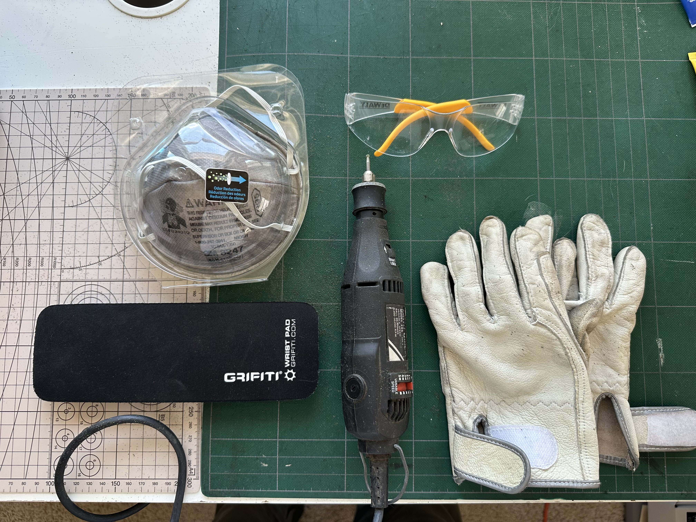

aug 3 2025
When I was younger, I had a CamelBak water bottle with dinosaur stickers. That bottle is now long gone, but I wanted to create something that recaptures its essence.
I had a 32oz Hydro Flask lying around, so I used this as my base.
Here's what you'll need if you wanna try at home.
First, I drew directly on the bottle with pencil. I had a reference image on my laptop and tried to keep the shapes as simple as possible.
Next, I used the Dremel to outline my sketch. I was planning on shading in the bones, but opted to just keep the outlines after consulting my brother. You want to apply pressure here for better precision with the Dremel. I'm not very experienced with the engraving bit, so you can see my lines are very squiggly.
This whole process took me an hour or so.
last edited aug 3 2025